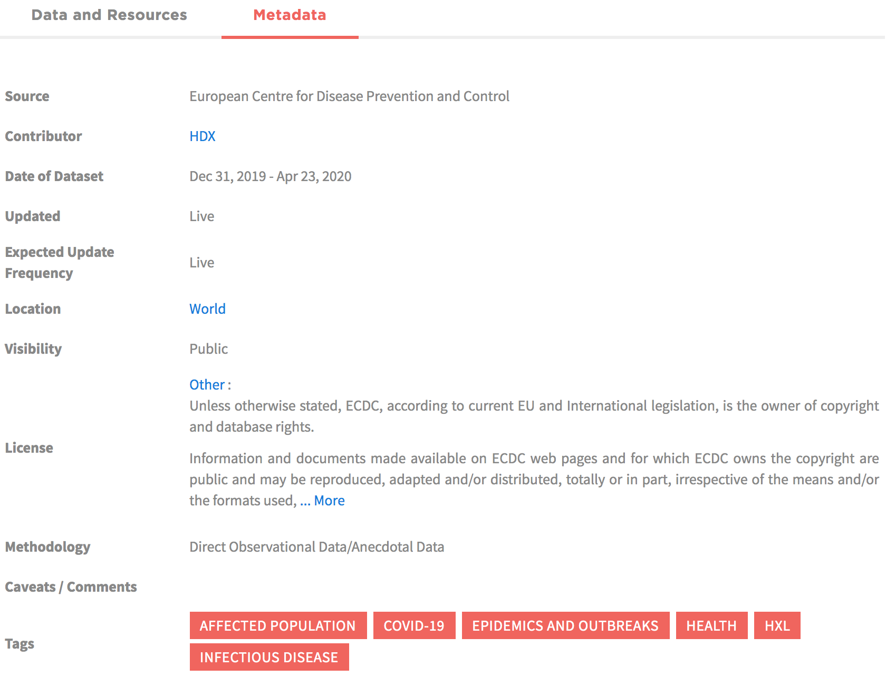

Quick Tips for Visualising Data
How to Visualise COVID-19 Data
Created by Centre for Humanitarian Data / @humdata
Press right on your keyboard or swipe right to navigate
In this short lesson we will go through best practices for creating visualisations using COVID-19 data and how to create a simple line chart in Excel.
The choices we make when we visualise data influence how people see, understand, and react to the data.
Click through to learn best practices for making responsible data visualisations with COVID-19 data.
How much time do you have to learn?
- Five Minutes: Read the tips on visualisation.
- Fifteen Minutes: Read the tips on visualisation and go through our step-by-step guide and demo video for making a chart in Excel.
Why We Visualise Data
We Visualise to Explore & Explain
We use visualisastion to explore data, to uncover different relationships and to discover the most meaningful information to highlight or analyse further.
We use visualistion to explain what we are seeing in the data. Explanatory visualisation can be used to inform, persuade and engage an audience. This is the type of visualisation we are going to focus on here.
How to Explain with Visualisation
Explanatory data visualisation requires a defined audience and clear objective. Before you start to visualise, ask yourself the following:
- What am I trying to say? And how will a visualisation help me do that?
- Who am I trying to say it to? And how does the visualisation need to be tailored for my audience?
Understand the Data
Before you start, get to know your data
Before digging into a COVID-19 data visualisation, it is important to spend a bit of time understanding what can and cannot be said based on the data.
The first step is to understand the definitions of the data included in your dataset. To do this:
- Check the meta-data
- Check the data dictionary
Press down to learn more
Explore the Metadata
Metadata is data about data. Digging into the metadata before you download can save you time and let you know whether the dataset even has the data you need.
Read more about HDX Metadata Press down to learn more
Read the data dictionary
Some organisations will publish data dictionaries along with their data. The data dictionary provides definitions for each variable in the dataset and helps you to understand what can and cannot be said with the data.

Check out the WHO Case Based Reporting Data Dictionary
Common COVID-19 Data Points
Common figures that are included in COVID-19 data sets.
- Active Cases includes the number of confirmed cases (and suspected cases where that is available) for a given timeframe minus those people who have died or recovered from COVID-19. (Also know as "prevalence"
- New Cases includes the number of confirmed cases (and suspected cases where that is available) for a given timeframe. (Also known as “incidence”).
- Cumulative Cases are the total confirmed cases up to a given point in time, without subtracting people who have recovered or died. These numbers over time only get larger and larger as new cases are added.
Designing Reponsibly
Designing Responsbily
The way we communicate about the COVID-19 pandemic has the potential to shape views of risk and safety.
The design choices we make can influence how our audience interprets our underlying data. There are no hard and fast rules for making design choices. The following are a few considerations when creating COVID-19 data visualisations.
Choose Colours Carefully
We associate red with danger. A map full of overlapping red circles, or ever darker shades of red, will communicate danger and may distract from other messages. Consider choosing neutral colours when creating COVID-19 visualisations.

Consider Using Relative Numbers
When comparing across countries, explore the difference in the visualisation when using absolute numbers (total # of confirmed cases) and relative numbers (# of confirmed cases per X thousand people). For example consider the difference between 500 new cases in a population of 10,000 versus 500 in a population of 100,000.

Source Kenneth Field
Pay attention when cropping axes
Cropping an axis can remove important reference from the visualisation. In the case below (left), the cropped axis may unintentionally make the fatality rate seem worse than it is, by obscuring the visual reference of the percentage of the people who survive.
Source Andy Cotgreave
Consider Using a Logarithmic Scale
When visualising a variable growing exponentially, a linear scale can obscure important details. For example, the U.S. and Italy look like they are on similar trajectories on the linear scale whereas it is clear with the logarithmic scale that COVID-19 cases are continuing to grow in the U.S. while Italy is seeing a slowdown.

Source Kenneth Chang
Linear and Logarithmic Scales
The most common form of a line-graph uses a linear scale. Along the Y axis, the numbers progress in a linear form – 1, 2, 3, or 10, 20, 30, etc..
On a logarithmic scale, numbers on the Y-axis don’t increase in equal increments. Each interval increases by a set factor – often 10 but could be a factor of 3 or 350 or 3,500, etc.
A logarithmic scale prevents large numbers from skewing a whole graph and is good for measuring rates of change, particularly rates of growth.
Embrace Complexity
There is a great deal of complexity around COVID-19, including in the data. Try to find ways to convey that complexity through your visualisation. For example, adding the simple phrase ‘we know of X cases’ helps to convey the critical message that the data we have is incomplete.

Source Lisa Charlotte Rost
Choosing the Right Visualisation
Relationship Types
The way we visualise information should follow from the type of relationships between different variables we want to highlight.
Over the next slides, we will go through the types of charts used to visualise the following relationships:
- Change Over Time
- Magnitude & Ranking
- Distribution
- Part of a Whole
- Spatial
Change Over Time
The following charts help give emphasis to changing trends over time.
Source Andy Kriebel & The Financial Times (Press down to learn more.)
Line Graph
A line graph will work for most time series data - with a few or many data points. You can also mark important events, e.g., when stay at home orders went into effect. Line charts are best for visualising trends.

Source: Our World in Data (Press down to see more chart options.)
Bar Chart
Bar charts for time series work best when dealing with distinct points in time such as days, months or years, e.g., - the number of confirmed cases reported daily.
Source: Worldometer (Press down to see more chart options.)
(Stacked) Area Graph
Area graphs are useful for comparing multiple data series changing over an interval. In the case of COVID-19, an area graph may be useful for showing the number of cases over time for different countries or regions.
Source: Our World in Data
Magnitude & Ranking
The following charts are options when the primary relationships you want to show are a size of comparisons or when position in an ordered list is important.
Source Andy Kriebel & The Financial Times (Press down to learn more.)
Ordered Bar Graph
Ordered bar and column charts are excellent for showing position and comparing, e.g., a list of COVID-19 cases by country. Fun fact: a 'bar chart' with vertical bars is called a column chart.

Source: Our World in Data on HDX
Distribution
Show the values in the dataset and how often they occur. The shape (or the skew) of a distribution can be a memorable way of highlighting the lack of uniformity of equality in the data.
Source Andy Kriebel & The Financial Times (Press down to learn more.)
Histogram
Histograms help give an estimate as to where values are concentrated, what the extremes are and whether there are any gaps or unusual values.

Source: Springer
Part of a Whole
Show how a single entity can be broken down into its component elements. People are not very good at defecting small differnces in shapes so if you are interested in showing the size of the components, a magnitude or ranking type of chart is often better.
Source Andy Kriebel & The Financial Times (Press down to learn more.)
Pie Charts
The pie chart is one of the most popular ways to visualise part-of-whole relationships but they quickly become very difficult to read. Only use a pie chart to compare two, at most three, data points. Keep in mind that they work best if one of the data points is significantly larger than the other(s).
If you are going to use a pie chart, make sure they:
- Display only nominal or categorical data
- Sum to 100%, i.e., not 99% or 101% due to rounding irregularities
- Contain only positive numbers
- Show only a single point in time
Press down to see more part-of-whole chart options.
Donut Charts
Over time, the donut chart has become increasing popular. The Donut Chart is similar to a pie chart – but the centre can be a good way of making space to include more information about the data (e.g., total).
Source: OCHA Financial Tracking Services (Press down to see more chart options.)
Proportional Stacked Bar
The proportional stacked bar is another simple way of showing part-to-whole relationships - espcially when comparing variables across groups or at different points in time.Source:Eleonora Nazander
Spatial
Use only when precise locations or geographical patterns in data are more important than anything else.
Source Andy Kriebel & The Financial Times (Press down to learn more.)
BASIC CHOROPLETH
The standard approach for putting data on a map. It is often better to use rates rather than totals for this type of map.

How to Create your own Visualisations
Do it yourself
It’s time to create your own visualisation. You have learned why we create visualisations, some considerations to make when visualising COVID-19 data and how to use various charts to highlight and communicate different relationships.
Now it’s time to give it a go. In this final section, we'll walk through how to create a logarithmic line graph. Included in this is a downloadable step-by-step guide.
Create A Line Graph in Excel
Download our Step-By-Step Guide to Creating a Logarithmic Line Graph & data from HDX
- Prepare & structure your data
- Insert a line graph
- Explore using a logarithmic scale
- Customise the design
Press down to walk through the steps together
Prepare & structure your data: Click on the video below to learn how to organise, filter and structure your data in order to create a line graph visualising the growth in COVID-19 cases in Afghanistan.
Press down for the next step.
Insert a line graph: Next, watch the video below to learn how to insert a line graph as well as how to format the dates.
Press down for the next step.
Explore using a logarithmic scale: Watch the video below to learn how to format your y-axis using a logarithmic scale.
Press down for the next step.
Customise the design: Now its time to customise the visualisation! Click on the video below to learn how to add text, change fonts and reduce cluter.
Further Reading